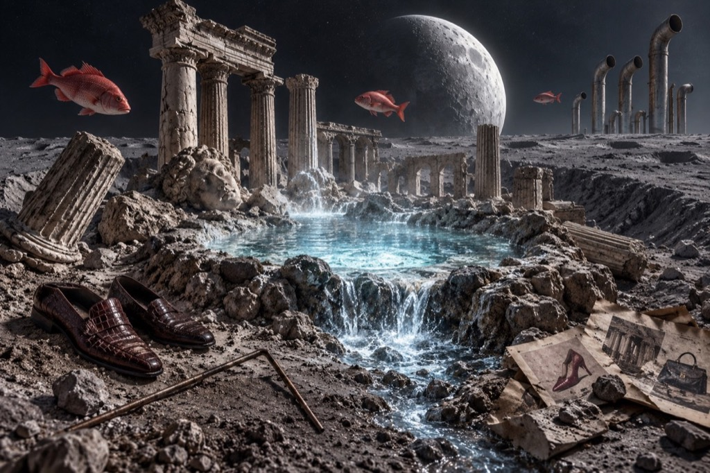
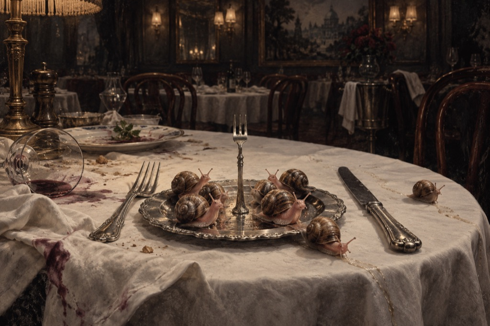
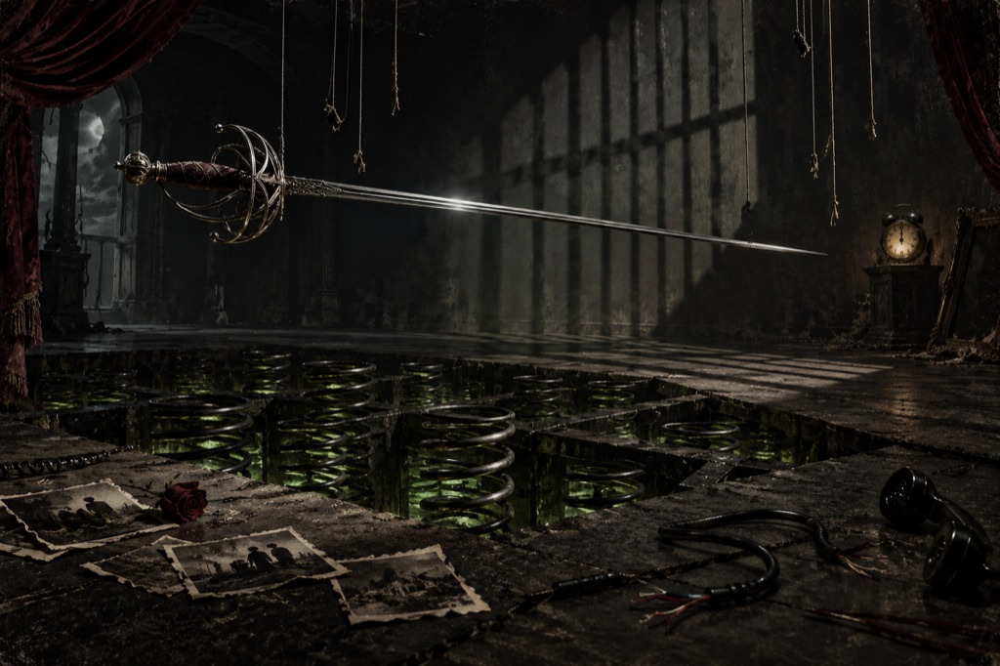
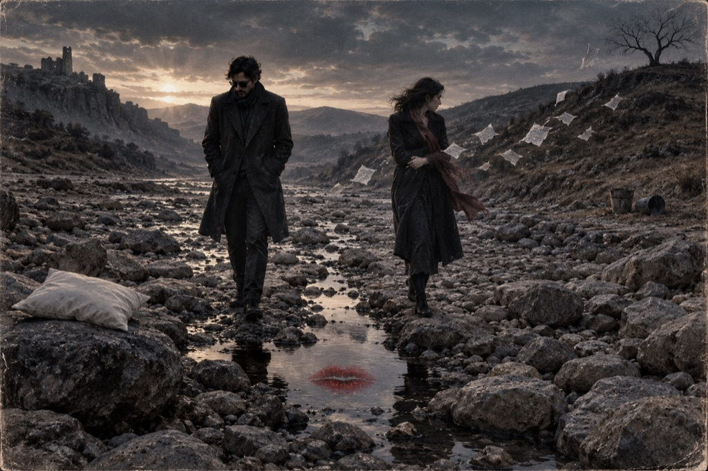
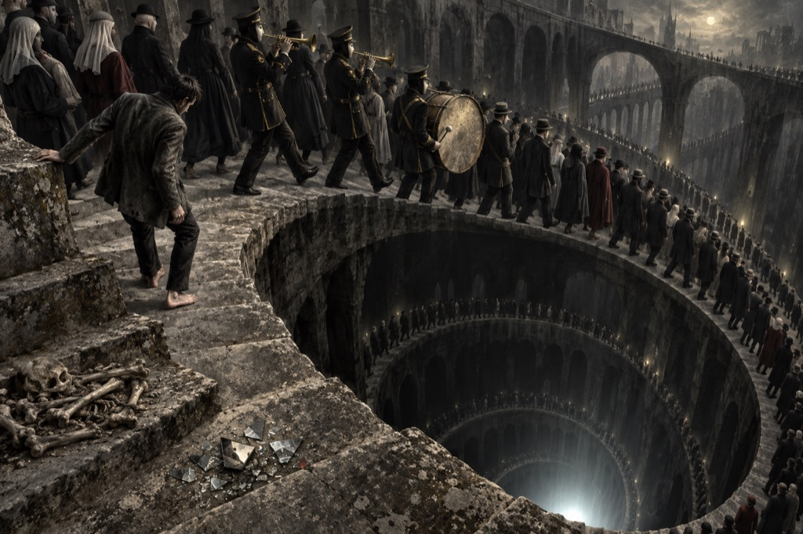
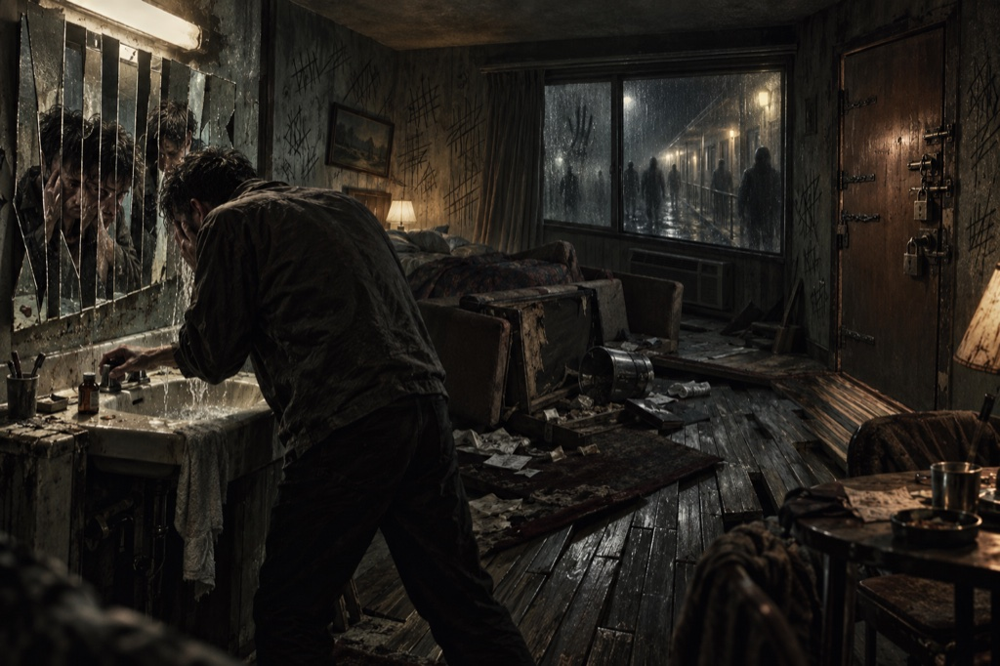
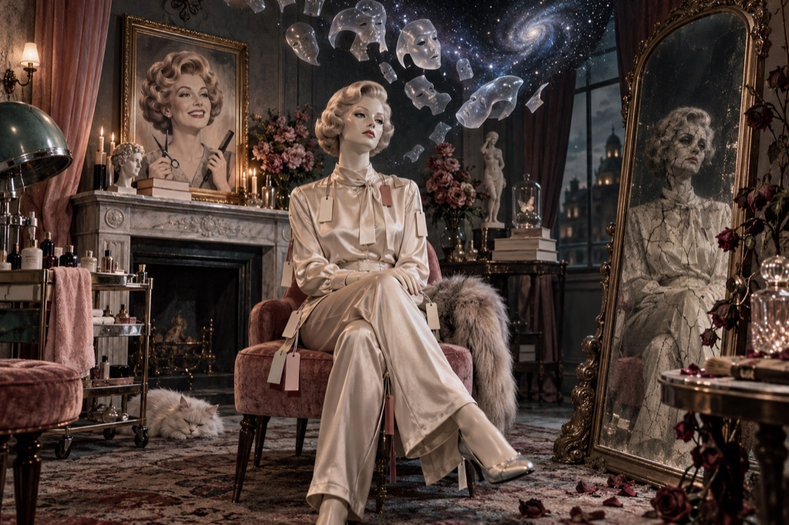
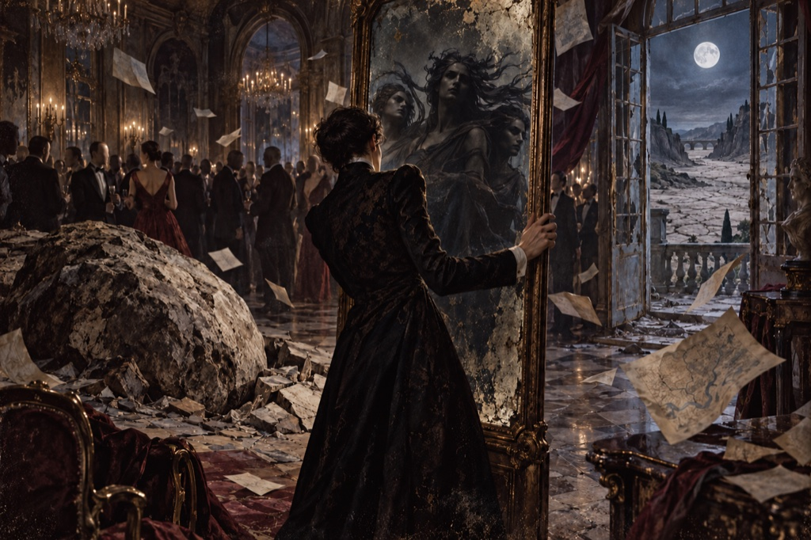
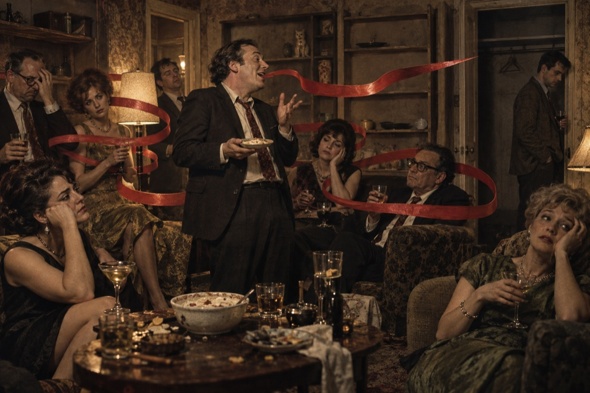

Daily Chats with AI
The Spiffy Awards
A Dialogue in Several Acts of Deteriorating Cultural Standards
Open case →Evidence Room · File 000
Dispatches from Peter Mangiaracina on writing, books, language, culture, politics, artificial intelligence, and whatever else has left fingerprints at the scene.
Open the filesOPEN CASE
Statement for the record
RabidFiles is where the orderly author website stops and the evidence begins. No posting schedule. No lifestyle brand. Just notes, arguments, obsessions, conversations, and the occasional item seized for further examination.
Filed in numerical order
Twenty-four genuine exhibits are now in the cabinet. More files will follow as the archive arrives.
A Dialogue in Several Acts of Deteriorating Cultural Standards
Open case →A college personality-theory project recast as a psychological chamber play.
Open case →A modest complaint about secondhand smoke, first-hand sanctimony, and one exceptionally well-timed backfire.
Open case →Do They Take Credit Cards in the Afterlife?
An actual conversation between Peter and Token Chugger, lightly edited for continuity.
Open case →I’m Too Sexy for My Toga
A Roman emperor, a sun god, and a wardrobe calculated to horrify the Senate.
Open case →Sanitation in Ancient Rome
Aqueducts, cloacae, turdmen, public latrines, and other facts of Roman sanitation.
Open case →A family history of baldness, desperate countermeasures & the cheap wig that made dignity a matter of life and death.
Open case →Imperial appetites, improbable menus, and the art of dining in the triclinium.
Open case →Making time for hobbies, finding flow, and refusing to become a basket case.
Open case →Motivation gets you started. Routine, constancy, and consistency keep you learning.
Open case →
A search for something pure through moon dust, classical ruins, catalogues, and misleading clues.
Open case →A false oracle, a trail of willing pilgrims, and one witness who has finally had enough.
Open case →
A tiny three-pronged utensil, an unwanted plate of mollusks, and a very public culinary crisis.
Open case →An endless Emporium queue, the curse of perfection, and one coveted flower.
Open case →
A portrait of coercion, isolation, and poisoned intimacy spoken in the predator’s own voice.
Open case →A forgotten king, a museum of collective memory, and the ruins where creativity tries to resurrect the dead.
Open case →
A missed declaration, a dried-up river, and the hindsight of words spoken too low and too fast.
Open case →
A faceless procession, a brazen marching band, and one outsider who cannot keep in step.
Open case →
Padlocks, motel glass, collapsing floors, and a mind besieged by threats it cannot escape.
Open case →
A satin-clad shrine to beauty, brand labels, pop psychology, and the terror of time getting its way.
Open case →
A crowded mirror, three relentless witnesses, an impossible boulder, and the truths that refuse to stay chosen.
Open case →A desperate angel, a congregation of clockwork answers, and one narrow doorway leading somewhere else.
Open case →
A weaponized tongue, onion dip, exhausted listeners, and one conversation that never discovers silence.
Open case →A disconnected phone, a wounded clock, a failed orbit, and loneliness collapsing toward its own black hole.
Open case →Evidence classification
The cabinet is ready. The actual archive comes next.
Primary suspect
Writer of psychological mystery thrillers, dark short fiction, and the material collected here. For the books, stories, biography, and official record, visit the author site.
Enter Rabid Scribe